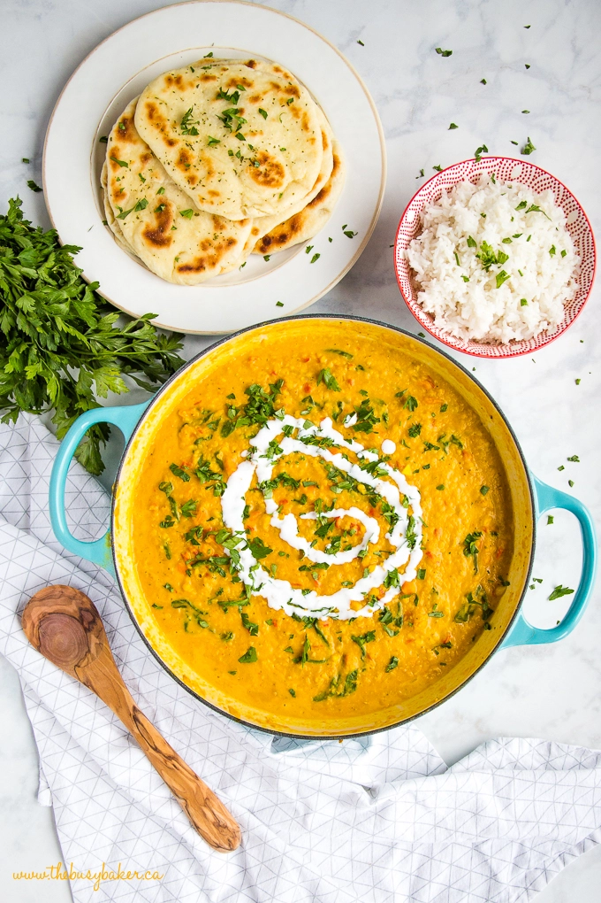

Lentil Curry

Savory and filling dinner
This lentil curry is easy to make and you only need one large 4qt skillet/pan to make it.
You can easily make this recipe vegan or dairy free and uses ingredients that are easily found at any grocery store.
It makes a large amount and keeps well as leftovers for a quickly packed work day lunch.
Ingredients
- 2 Tbsp olive oil
- 2 medium onions, finely diced
- 2 teaspoons freshly grated ginger
- 2 cloves garlic, finely minced
- 1 Tbsp mild red curry paste
- 2 tps ground turmeric
- 2 tsp tomato paste
- A pinch or two of salt and pepper
- 3 large carrots, peeled and diced
- 1 large red bell pepper, diced
- 1 1/2 cup split red lentils
- 5 cups vegetable stock (use chicken stock if you prefer)
- 1 cup full fat coconut milk
- 2 large handfuls fresh baby spinach
- Fresh, chopped cilantro for garnish
- Extra coconut cream for garnish, if desired
Recipe Directions
- Heat a large deep skillet over medium heat and add the olive oil.
- Add the onions, ginger and garlic and saute until fragrant and soft.
- Add the curry paste, turmeric, tomato paste, and salt and pepper, and stir to combine, allowing the mixture to toast slightly over the heat for about one minute.
- Add the carrots, red bell pepper, and lentils and stir to coat in the spice mixture.
- Pour in the vegetable stock and stir well, covering the pan and allowing the mixture to come to a boil.
- Cook the lentil mixture for about 20-25 minutes, stirring regularly to prevent the bottom from burning, until the lentils are puffy and soft and begin to lose their shape.
- Reduce the heat to low and add the coconut milk and spinach, stirring just until combined.
- Cover and allow the spinach to wilt for a few minutes in the hot curry.
- Serve over steamed rice with fresh Naan bread, your favourite crusty white bread for dipping, or bakery fresh pita bread as an easy alternative to homemade Naan.
Return to top
Return to main page